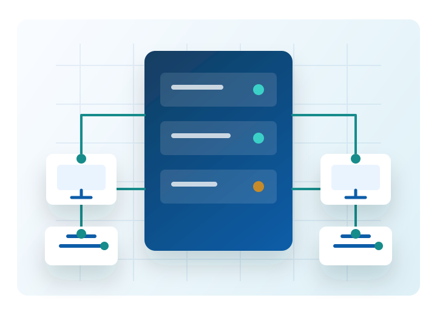

Внутренний корпоративный портал
Информационные технологии для стабильной работы предприятия
ИТ-отдел ООО «Металлопродукция» поддерживает корпоративную сеть, рабочие места, учетные системы и цифровые сервисы, которые помогают подразделениям работать без простоев.

О подразделении
Единая точка поддержки цифровой инфраструктуры
Отдел информационных технологий отвечает за надежность рабочих сервисов, безопасность данных и быстрое восстановление доступа к системам, необходимым для производственных и офисных процессов.
Основные задачи
Что обеспечивает ИТ-отдел
Приоритет отдела - бесперебойная работа сотрудников с корпоративными системами и оборудованием. Заявки обрабатываются с учетом срочности и влияния на производственный процесс.
Посмотреть порядок обращения
Администрирование рабочих станций, учетных записей и корпоративных сервисов.
Поддержка 1С:Предприятие, офисного ПО, электронной почты и печати.
Контроль сетевой инфраструктуры, резервного копирования и информационной безопасности.
Консультации сотрудников по регламентам, доступам и типовым неисправностям.
Почему лучше обращаться официально
Преимущества работы через ИТ-отдел
Контроль сроков
Заявка фиксируется, получает приоритет и не теряется в переписках или устных договоренностях.
Безопасность данных
Доступы выдаются по регламенту, а изменения выполняются с учетом защиты корпоративной информации.
Единые стандарты
Оборудование, ПО и настройки приводятся к корпоративным требованиям, что снижает количество повторных проблем.
Сервисы
Популярные услуги ИТ-отдела
Выберите нужное направление, чтобы быстрее понять, какие данные подготовить перед обращением.
Рабочие места
Настройка компьютеров, установка корпоративного ПО, диагностика оборудования и подключение периферии.
1С:Предприятие
Консультации по доступам, печатным формам, ошибкам запуска и корректной работе с базами.
Сеть и интернет
Проверка сетевых подключений, доступов к ресурсам, VPN и общим папкам подразделений.
Печать и сканирование
Подключение принтеров, устранение очередей печати, настройка сетевого сканирования.
Учетные записи
Создание, блокировка и восстановление доступов к корпоративным системам по согласованной заявке.
Информационная безопасность
Проверка подозрительных писем, антивирусная защита, рекомендации по безопасной работе.
Быстрый доступ
Частые сценарии
Собрали самые востребованные разделы, чтобы сотрудник мог быстро найти порядок действий без звонков и ожидания ответа.